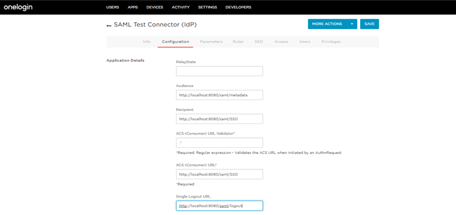
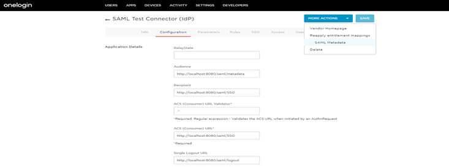
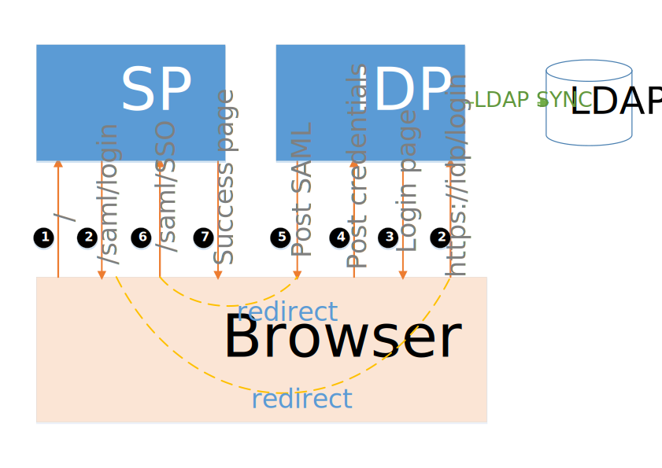

Note - Demo code is using Project lombok and please install Project lombok plug-in to your IDE to avoid errors.
Overview
Single Sign-on (SSO) is an authentication process to allow users to use single credentials across multiple applications within an organization. With Single Sign-on we will get below benefits.
- Use single credentials which are defined in LDAP server
- One time login to get access to multiple application
- Minimizes user management like - disable account, lock or unlock account and etc.
There are different protocols to support SSO authentication process. The most trendy ones are OpenId connect and SAML 2.0. This article is focused on SAML 2.0. Before jumping into code lets understand some basic terminology of SAML or SSO.
SSO terminology
- SAML - Secure Assertion Markup Language(SAML) is a digitally signed XML document which includes information about user, source and destination systems which are intended to use this XML document and other information to validate the XML signature.
- IDP - Identity Provider (IDP) is a system who is identified the user and issued signed SAML document
- SP - Service provider (SP) is a system who receives the SAML XML
- Metadata - Is a XML document which holds information about the identity provider and service provider. Metadata XML is issued by identity provider when a service provider registers the application. Please note that metadata XML is a application specific file. Metadata holds entityId attribute which is unique to an application.
- Success callback URL - This is service provider success URL. Identity provider will use this URL to post the SAML response
- IDP initiated SSO - In this process a user will login into the identity provider website and tries to access the service provider resources remotely. In this case idp will initiate the request to service provider and post the SAML response to allow access to resources.
- SP initiated SSO - In this process a user will request to service provider to access the protected pages. The service provider will initiate the request to the identity provider to validate the user. Upon getting request the identity provider will prompt to enter the credentials if not logged in. Once login is success the identity provider will post the SAML response to the service provider.
Spring SAML
Spring provides below two artifacts to handle SAML 2.0.
spring-security-saml2-core - saml2 core is an extension of Spring security to support basic SAML processing for single sign-on.
spring-security-saml-dsl-core - saml dsl is used along with saml 2 core which holds basic configuration for request mapping, filter and authentication provider configuration.
We can use saml2 core alone, but we need to configure request mapping, filters and authentication, SAML context and lots of other details with are common for most of the applications. To avoid all these we just use saml dsl which makes our life simple. spring-security-saml-dsl-core contains below request mapping details configured by default.- /saml/metadata - This mapping is used to display and read the metadata file.
- /saml/login - Responsible to generate the login request and redirect to IDP page for login.
- /saml/logout - Used to logout and clear the global or local session. Use local=true parameter to logout only the application session. If you don't pass this parameter, then global session will be cleared and logout from all applications which are opened in the present browser.
- /saml/SSO - This is success callback URL and IDP uses this request mapping to post the SAML.
IDP Configuration
Spring SAML supports various identity providers(IDP) like ADFS, Okta, Shibboleth, OpenAM, OneLogin and others. We are going to use OneLogin IDP to demo the SAML based SSO. But the code which is shown in the demo can be used with other IDP vendors as well.
OneLogin registration
- Use OneLogin developer portal to sign-up for a free trail.
- Upon registration use link and follow only task 2 steps to register your application.
- Once you have added the app in portal, click on Configuration tab and
give below details as input.
Please note that I am running an application on port 8080 with the http protocol. If you are using the different port update accordingly. Also note that the property terms may vary from provider to provider. The configuration looks like below.Audience http://localhost:8080/saml/metadata Recipient http://localhost:8080/saml/SSO ACS URL validator .* ACS URL http://localhost:8080/saml/SSO Single Logout URL http://localhost:8080/saml/logout 
-
Download the metadata file from OneLogin site. Use More Action link and select SAML
metadata link to download the metadata. Copy the downloaded metadata XML into your
project resource folder.

SP Configuration
- Create Springboot maven project and add saml core and saml dsl in pom.xml.
-
Use Java keytool to generate self signed certificates and place the keystore.jks file
in the resource folder.
keytool -genkey -keyalg RSA -alias onelogin -keystore keystore.jks -storepass secret -validity 360 -keysize 2048 - Place OneLogin metadata file in the resource folder which is downloaded in the previous section
-
Create SecurityConfig.java file and add below configuration
saml() is a static method returns SAMLConfigurer singleton instance which contains the SAML 2 request mapping, filter and authentication provider details.
Most important part of the configuration is serviceProvider() section. Usually when a user successfully logged in, IDP will post a SAML response to /saml/SSO of service provider. Upon receiving the SAML, a service provider will validate the XML. As part of the validation, it looks for entity id, destination, audience and other details.
For example, In our IDP configuration section we mentioned http://localhost:8080 domain for all sections. Hence we mentioned localhost, as part of the SAML response the XML document will contains http://localhost:8080/saml/SSO as the destination. When a request is posted to localhost instance, it will check for destination attribute with local instance domain. This is called intended destination. If both (SAML destination attribute and local instance name) are not matching request validation will fail.
Above example is fine when we are testing in local or with a single instance. But in production that is not the case. We will have multiple instances on multiple nodes with the load balancer. In IDP configuration we will give the load balancer domains instead of single node domain. In this case the SAML validation will fail because the SAML response intended destination is loadbalncer domain, but while validating the request in the instance it always compare with the present node name.
spring-security-saml2-core contains two different SAML context providers to validate the SAML token. One is SAMLContextProviderImpl.java and another one is SAMLContextProviderLB.java. By default spring-security-saml-dsl-core uses SAMLContextProviderLB.java as a context provider. While validating SAML intended destination, SAMLContextProviderLB.java uses the configured domain instead of validating with the SAML processing node domain.
- Added self signed certificate and the metadata file details in application.yml file.
Process flow
Source code
Find the git repository for the complete code.